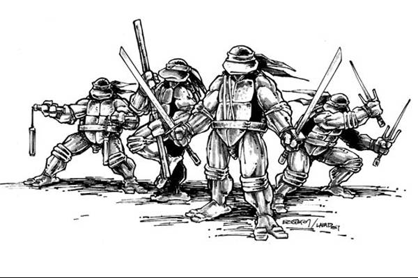

Os quadrinhos preto e branco são comumente associdados a materiais autorais, muitas vezes por ser publicados por autores que fogem do esquema da grand industria que prioriza o material colorido, embora mais recentemente grandes editoras tem dados espçao para que autores expeirmentem o preto e branco em suas obras.Materias como TMNT, ganharam grande destaque no mercado undergound mesmo sendo quadrinhos pb, embora hoje as obras sejam publicadas em cores e comum a republicação do material original.
Os anos 90 empresas como a IMAGE COMICS ganharam grande destaque ao inovarem com cores. Esse foi só o começo de uma revolução que mudou para sempre todo o mercado dos quadrinhos e do entretenimento! .
As Tartarugas Ninja (Teenage Mutant Ninja Turtles, abreviado como TMNT) são quatro tartarugas antropomórficas batizadas com o nome de artistas italianos do Renascimento e treinadas na arte do ninjutsu por um rato sensei antropomórfico chamado Splinter. A partir da sua casa, os esgotos de Nova Iorque, batalham contra criminosos, senhores demoníacos, criaturas mutantes e alienígenas invasores, enquanto tentam permanecer escondidos da sociedade.